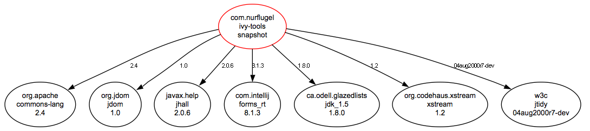
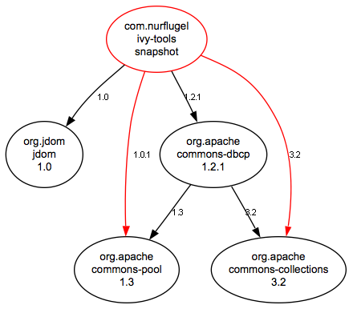
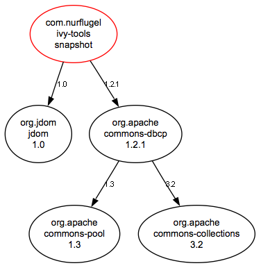
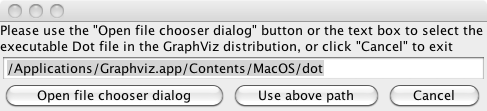

Ivy Grapher
Using Ivy Grapher
If you fired up the program, and accepted all the defaults, and then pointed it at the Ivy report for this application (Ivy generates these every time it's run, theyr'e located in the .ivy directory, check your Ivy settings), you'd get something like the following:
If you just wanted to see what was distributed, you'd get something else:

Note the revisions that are listed. You'll see the revision of what was actually pulled from the repository in the ellipse, and what was requested on the edge. In these cases, there were no conflicts, so everything's black.
Here's another case, where there are "bad" callouts from the Ivy file - we're calling everything out explicitly:
<dependency org="org.apache" name="commons-dbcp" rev="1.2.1" conf="build" />
<dependency org="org.apache" name="commons-collections" rev="3.2" conf="build" />
<dependency org="org.apache" name="commons-pool" rev="1.0.1" conf="build" />
<dependency org="org.jdom" name="jdom" rev="1.0" conf="build" />

Notice that we now have some red lines - we're calling out commons-pool 1.0.1 when commons-dbcp is requesting 1.3, and we're also requesting commons-collections 3.2 when commons-dbcp is also asking for revision 3.2. In both cases,
we can remove the explicit callout from our ivy file, and clean things up a bit:
<dependency org="org.apache" name="commons-dbcp" rev="1.2.1" conf="build" />
<dependency org="org.jdom" name="jdom" rev="1.0" conf="build" />

Now we see we get the same results, but with less clutter in the Ivy file - we only need to call out two dependencies instead of four!
Usage
When the program is started, you get a frame in the center of your screen:There are several choices for output - PNG, PDF (only available on OS X, sorry!), and SVG.
By default, the program cleans up after itself, and removes the tempory .dot files used by Graphviz. Uncheck this box if you want to save them.
Node order can be specified. I like "top to bottom", but everyone has their favorites.
By the way, all preferences will be remembered the next time the program runs. Java Preferences makes this sooo easy!
One last thing - you need AT&T's GraphViz to make the magic work. Go to http://www.graphviz.org/ to download the app. There are versions available for almost
every platform. I've included default locations for Windows and OS X. In any case, if you install it somewhere other then the default location for your platform, you'll need to use the
"Find Dot" button to tell the app where it is:

When the program is run, it'll automatically generate the images using GraphViz's libraries, then open the image for viewing in both Windows and OS x.
Enjoy!